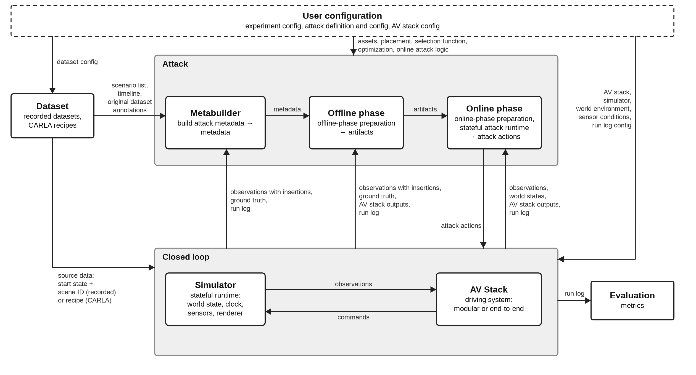

Architecture¶
Audience: Experiment authors and contributors.
Outcome: Understand framework components, dependency layers and isolation.
Prerequisites: None.

Components¶
AVSecTester combines recorded data or scenario recipes, a simulator, a driving system and attacks. Each simulator and driving-system integration retains its native implementation.
| Component | Responsibility |
|---|---|
Dataset |
Recorded frames, recipes and semantic maps |
Simulator |
Reusable settings and capability declarations |
SimulatorRuntime |
One active world, clock, actors and sensor captures |
AVStack |
Driving inference and per-run history |
ObservationPipeline |
Model-visible sensor processing, localization and observation hooks |
DrivingAdapter |
AVStack construction and component/scorer bindings |
Attack |
Parameters, segment selection and offline preparation |
AttackRuntime |
One run's online phase |
ClosedLoopServices |
Isolated sensor, render, component and rollout requests |
ScenarioView |
One scenario's timeline, frame data and selection reasons |
Experiment |
Preparation, treatment execution and persistence |
HookSet |
Ordered callbacks, lifecycle and run-scoped random generators |
RunLog |
Independent step and event snapshots |
Metric |
Measurements from recorded comparison groups |
The runtime reference defines decision order and recorded evidence. The Python API lists public modules and contracts.
Terms¶
| Term | Meaning |
|---|---|
| Scenario | One dataset scene or simulator recipe |
| Segment | A scenario window with attack-owned user_data |
| Unit | A distinct segment, including its complete user_data |
| Treatment | A named attack/environment setting |
| Comparison group | A unit and seed with the applicable treatments |
| Offline phase | Preparation of artifacts before execution. It may be a no-op |
| Online phase | An AttackRuntime's setup, step and stop lifecycle. It may be a no-op |
| Attack action | A modification requested by an attacker |
| Command | A driving-system output or the command executed by the simulator |
| Attack impact | A measured consequence for driving |
| Metabuilder | An attack's build_metadata method for scenario-segment selection |
| Metadata | Selected segments and their attack-owned data |
| Artifact | Prepared data reused by online phases |
| Environment | World settings and sensor corruptions |
| Unattacked treatment | A treatment with no enabled attack |
| NRE | NVIDIA Neural Rendering Engine |
| CATK | Closest Among Top-K |
See attacks for implementing the two phases and evaluation for comparing treatments.
Code layout and dependencies¶
Paths are relative to avsectester/.
| Directory | Responsibility |
|---|---|
./ |
Shared records, validation, serialization, type paths and CLI entry points |
geometry/ |
Camera models, poses, projection and ray/mesh geometry |
datasets/ |
Stateless recordings and recipes |
maps/ |
Semantic records and map readers |
rendering/ |
Assets, surfaces, textures, harmonizers and composition |
closed_loop/ |
Hooks, environments and sensor corruptions |
closed_loop/simulators/ |
Contracts, recorded playback, dynamics, navigation, ground contact and object composition |
closed_loop/simulators/carla/ |
CARLA world and sensor integration |
closed_loop/simulators/nurec/ |
NuRec rendering, traffic.py sessions and server.py local services |
closed_loop/avstacks/ |
Driving interfaces and DrivingAdapter |
closed_loop/avstacks/implemented/ |
Supplied driving systems, including modules/ |
attack/ |
Attack contracts and structured offline_report outputs |
attack/insertion/ |
Assets, placement, visibility and insertion actions |
attack/optimization/ |
Optimization interfaces, algorithms and scorer bindings |
runlog/ |
Recording and reading steps, events and payloads |
execution/ |
Runner, services and frame-data caching |
evaluation/ |
Metrics, comparison groups, reports and plots |
implemented_attacks/ |
One concrete attack per snake_case class directory |
experiment/ |
Configuration, preparation, execution and saved outputs |
Simulator and AVStack package initializers expose interfaces. Import implementations from
their own modules. User implementations live in their own packages. See
driving systems and attacks.
Dependency layers¶
Internal imports point to the same layer or a lower layer, including imports inside functions. The declared type-only exception below permits annotations without a runtime dependency.
| Layer | Modules | Allowed internal imports |
|---|---|---|
| L0 | geometry/, validation.py, type_paths.py, serialization.py |
L0 |
| L0′ | data_types.py |
L0–L0′ |
| L1 | datasets/, maps/, rendering/ |
L0–L1 |
| L2 | closed_loop/ |
L0–L2 |
| L3 | attack/, runlog/ |
L0–L3 |
| L4 | execution/ |
L0–L4 |
| L5 | evaluation/ |
L0–L5 |
| L6 | implemented_attacks/ |
L0–L6 |
| L7 | experiment/ |
L0–L7 |
| L8 | cli.py |
L0–L8 |
| Importer | Imported module | Condition |
|---|---|---|
avsectester.attack.attack |
avsectester.execution.services |
TYPE_CHECKING |
Map readers do not depend on datasets. Rendering does not depend on simulators or attacks. Generic attack tools do not import concrete attacks, and concrete attacks do not import one another. Optional SDK, model and GPU imports stay inside their owning implementations.
Supported configurations¶
The supplied configuration list contains these combinations.
Dataset |
Simulator |
Driving system |
|---|---|---|
CarlaDataset |
CarlaSimulator |
ModularAVStack |
CarlaDataset |
CarlaSimulator |
CameraForwardCollisionAVStack |
NuRecDataset |
NuRecSimulator |
AlpamayoAVStack |
NuRecDataset |
NuRecSimulator |
RuleBasedAVStack |
NuScenesDataset |
RecordedReplaySimulator |
CameraForwardCollisionAVStack |
Not yet implemented. Using ModularAVStack with NuRec, or AlpamayoAVStack and
RuleBasedAVStack with CARLA. See
Cross-simulator configurations.
Reactive NuRec traffic is optional. See simulator behavior.
World ownership¶
A runtime's world_key identifies its mutable world. Runtimes sharing an external world use the
same key. Within a process, claim_world permits nested claims by the same owner and rejects
another owner immediately. The caller closes native resources before releasing its claim.
exclusive also rejects nested operations on the same runtime. Claims do not coordinate
separate processes. See the
runtime contracts.
Isolation and comparison¶
Isolation means a run has its own runtime state and recorded snapshots. Comparison groups are defined in Terms.
See experiment workflows for resource scopes and evaluation for grouping and measurements.